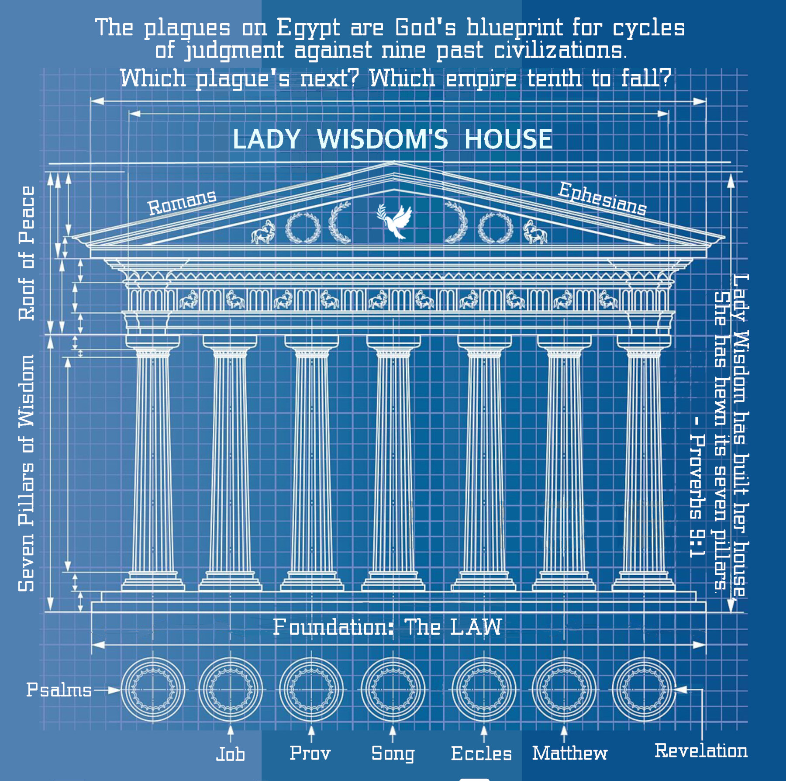

Blueprint for Lady Wisdom's House
Published on 2024-04-29
Abstract
In Proverbs, the wisdom of God is likened to a house. This is not for merely pedagogical reasons. Not only the whole but the parts in their relationship to one another resemble a house. Foundation, pillars, roof, and lighting all map to aspects of the Bible. Those structural elements are nailed together using semantic patterns that are analogous to fastener hardware. This article is an expansion of the chapter "Architecture of Lady Wisdom's House" from the book Plague, Precept, Prophet, Peace.
Solomon sets forth the path to maturity in Ecclesiastes. What does he have the man do who has attained this rank in life? In Ecclesiastes 10, he has him build a house. That chapter is an extended metaphor on how to build a life, a family and a legacy. For such an undertaking, it is wise to hire the best architect available. Proverbs introduces the craftsman with the best reputation and skill, but it isn't a man. If you want a basement that won't flood and a roof that doesn't leak, you need Lady Wisdom.
Architecture of Lady Wisdom’s House
In the preamble to the Ten Commandments, the Lord said that he led the people out of the land of slavery. Many translations use a different phrase: the house of slavery. If they were leaving one house, it must mean that they were being carried to another house. So they were. Their new house was the House of Wisdom, called in Proverbs Lady Wisdom’s house.
We do not have complete blueprints for Lady Wisdom’s house. This is what I have figured out so far. The clues are Bible passages and structural patterns that show how the wisdom of the Bible is interconnected, sequenced and quantified. The closest thing we have to a CAD/CAM drawing is found in Proverbs:
Wisdom has built her house;
she has hewn her seven pillars.
She has slaughtered her beasts;
she has mixed her wine;
she has also set her table.
- Proverbs 9:1-2, ESV

Foundation
The Bible is Lady Wisdom’s house (or if you will, it’s blueprint). Its foundation is the Law, the five Books of Moses. Jewish tradition suggests that the original Ten Commandments were carved upon tablets of lapis lazuli. That imagery is also associated with the base of God’s heavenly throne:
I looked, and I saw the likeness of a throne
of lapis lazuli above the vault that was over
the heads of the cherubim.
- Ezekiel 10:1, NIV
Lapis lazuli is foundational to a promise:
“Afflicted city, lashed by storms and not comforted,
I will rebuild you with stones of turquoise,
your foundations with lapis lazuli.
- Isaiah 54:11, NIV
Job includes lapis lazuli in his inventory of treasures in Job 28. The law of God is our greatest treasure, as David argued in Psalm 119. The remaining parts of God’s house are connected to this precious foundation by structure and imagery. The chapter Matthew and the Law of Christ shall develop the Law Pattern and rigorously show how the Law connects to the Harvest and Growth Patterns, hence the pillars.
Pillars
The seven pillars are seven Bible books, arranged in this order:
- Psalms
- Job
- Proverbs
- Song of Songs
- Ecclesiastes
- Matthew
- Revelation
Three of Solomon’s books form its core; Solomon also penned at least one Psalm. What unifies them are a Growth Pattern of twenty-eight times defined in Ecclesiastes 3 and a sevenfold Harvest Pattern defined in Matthew. (The Growth Pattern is described in The Growth Pattern of Solomon. The Harvest Pattern is describes in The Harvest Pattern of Jesus. ) All seven books contain both patterns. These patterns dominate the material of six of the pillar books. The exception is Psalms, whose complete structure eludes me. (I devote many chapters in both Peace, like Solomon Never Knew and Plague, Precept, Prophet, Peace to describing the patterns that I could identify in Psalms. There are a lot of Psalms!) Even so, the Growth and Harvest Patterns are displayed in about half the Psalms.
Jesus said something that is more than a comparison. It is a riddle:
The Queen of the South will rise at the judgment with
this generation and condemn it; for she came from
the ends of the earth to listen to Solomon’s wisdom,
and now something greater than Solomon is here.
- Matthew 12:42, NIV
Each chapter of the Gospel of Matthew contains elements that match the corresponding time of Solomon’s list. However, Matthew also includes at least seventeen instances of the Harvest Pattern. Furthermore, the seven pillars of wisdom are arranged in the order I listed them for a reason. That order follows the sevenfold Harvest Pattern. So internally, Solomon’s pattern dominates most pillars. But externally, the seven are governed by Jesus’ pattern. His is the greater pattern, illustrating that his wisdom is greater than Solomon’s.
Why should we order the seven pillars like that? The Harvest Pattern is Preparation, Plowing, Planting, Pouring, Plucking, Producing and Peace. Preparation is accepting the Lordship of Jesus Christ. The Psalms speak of the Lord more than any other book in the Bible. Plowing is about suffering, and Job is focused on enduring and learning from our suffering. Proverbs plants seeds of wisdom in the mind. Song of Songs waters a thirsty heart and addresses our emotions and desires. Ecclesiastes is all about purpose, priorities, and time management, hence plucking out all the weeds of what is not important. Matthew is all about producing a harvest. Jesus is there called the Lord of the Harvest and harvest imagery is found throughout. Finally, Revelation is about the peace that will follow the final war, the final harvest of souls.
The nature of the books is not the only clue to their ordering. Hannah’s prayer of thanksgiving in 1 Samuel 2 is also a prophecy about the seven pillars of wisdom. As a woman who had been barren, her key praise is “The barren has borne seven.” Her prayer alternates between opposites like killing and giving life, but there is an interlude without opposites that stands out:
“For the pillars of the earth are the Lord's,
and on them he has set the world.”
Each pair of opposites in Hannah's prayer matches a pillar book, a phase of the Growth Pattern, and a period in history.
(See Hannah's Song for an extended analysis of her prayer. It shows that the ten verses of her prayer are also intentionally structured according to the Ten Commandments. This is another fastener connecting the parts of the house together.)
Footings
A most amazing discovery is that the pillars fit snugly into the foundation of the law. The Ten Commandments may be expressed as fourteen imperative statements. For example, the Sabbath commandment has three parts: keep the sabbath holy, work six days, and don't work on the seventh day. When divided this way, the first seven imperative statements are about loving God. The second set of seven are statements about loving your neighbor. God is eternal, so our love for God must be eternal. People live in time, so our love for our neighbors is temporal.
The Growth Pattern of Solomon is temporal; it is derived from the poem of the twenty-eight times in Ecclesiastes 3. Thus the seven phases of the Growth Pattern match the eighth through the fourteenth imperatives.
The Harvest Pattern of Jesus is about the pursuit of heavenly treasures. Those first seven imperatives in the Law therefore match the seven phases of the Harvest Pattern.
Together, the match between the two patterns and the Decalogue shows that the Law is not a set of static rules. The Law is dynamic and points the way to a harvest of peace.
For an extended discussion of how the Law is so structured, see these articles:
Roof
This feature of Wisdom’s house was the last to occur to me. Both the Harvest Pattern and the Growth Pattern end the same: with peace. If those patterns define the seven pillars, then the tops of the pillars are capped by an overarching roof of peace. The Apostle Paul employed the word “peace” more than any other Bible writer. Paul said of himself, “Last of all, as to one untimely born, he appeared also to me.” (1 Corinthians 15:8) The pillars are about time and eternity. Paul comes last, to speak of the peace at the end of time that flows into the eternal peace of Heaven.
The elements of a house must fit together. In Ecclesiastes 10, Solomon warns against poor design leading to sagging rafters and a roof that leaks. Paul in 1 Corinthians 3:10 calls himself a wise builder. In that instance, Paul speaks of his ministry as laying a foundation, not building a roof. 1 & 2 Timothy and others of his letters comment extensively on law and grace, which is foundation work. ("Appendix I: A Clock for Timothy" in Peace, like Solomon Never Knew shows how the ten chapters of the two letters are structured according to the Ten Commandments, with 1 Timothy 1:8-11 giving examples of breaking all of them.) Romans and Ephesians include Paul’s most powerful words about peace, so they are part of the roof. Romans connects law and grace to peace, combining them.
Many people argue about what to make of the perceived differences between the doctrines of Jesus found in the Gospels and the doctrines of Paul. Paul was building the roof. He had a different job to do. Part of that job was to train up mature individuals and churches.
Did you ever wonder why Paul's letters to the churches are ordered as they are? It is not random and it is only coincidentally by descending length. His first seven letters fit snugly into the Growth Pattern. Each letter matches one of the phases of Solomon's Pattern:
- Security: Romans teaches us Eternal Security
- Ability: 1 Corinthians trains us in the spiritual gifts, our charismatic abilities
- Stability: 2 Corinthians steadies us with comfort from the God of all comfort
- Amity: Galatians warns us not to embrace a different gospel
- Opportunity: Ephesians pours out "every spiritual blessing in the heavenly places"
- Community: Philippians teaches us how to "[be] in full accord and of one mind"
- Loyalty: Colossians brings us to full maturity in Christ, "in whom are hidden all the treasures of wisdom and knowledge"
If you follow the progression through these seven letters, you will reach full maturity and acquire "all the treasures of wisdom and knowledge". Thus the letters are arranged as a comprehensive discipleship training course. For a detailed analysis and defense of this idea, see the article The Apostle Paul's Discipleship Program. It is an idea original to this website and not found in any of my books (yet).
Lighting (Spirits)
It is easy to imagine a torch mounted on each pillar, to light the house. Revelation 1:20 speaks of churches as lampstands and starry flames as the angels of the churches. Some people believe the seven pillars are the seven spirits of God. Those spirits are numbered in Revelation 1:4, 3:1, 4:5, and 5:6 and named in Isaiah. I do not believe that these spirits are the pillars but instead each are matched with a pillar to illuminate its themes.
The seven spirits are (with numbers added by me):
And the (1) Spirit of the Lord shall rest upon him,
the Spirit of (2) wisdom and (3) understanding,
the Spirit of (4) counsel and (5) might,
the Spirit of (6) knowledge and (7) the fear of the Lord.
- Isaiah 11:2, ESV
First, from these we know that Psalms extol Lordship. Indeed, no other Bible book holds more verses that cite the word Lord (717 verses) than the Psalms.
Second, we find that Job shines light upon wisdom. Why wisdom? Solomon said, “The heart of the wise is in the house of mourning, but the heart of fools is in the house of mirth.” (Ecclesiastes 7:4, ESV) Wisdom is first born from suffering, though its full flowering comes later.
Third, Proverbs is aligned with the spirit of understanding. Understanding is bound up with worship, and Proverbs is devoted to teaching us what is worthy of our worship and pursuit and what is not.
Fourth brings the less obvious connection between Song of Songs and the spirit of counsel. The woman in love counsels her friends about being careful not to arouse or awaken love until it is time. If you compare the poem of the times in Ecclesiastes 3 to the twenty-eight speaking parts in the song, you will find that fifteen times the speaker says or does something consistent with the opposite time, the exactly wrong time. We really need that spirit of counsel.
The fifth spirit, of might, matches Ecclesiastes. That book is tied up with time management and focusing on priorities. Solomon speaks extensively of work: of planting vineyards, building houses, and trading goods with foreign lands. Among his most pointed messages is this:
Whatever your hand finds to do, do it with your might,
for there is no work or thought or knowledge or wisdom
in Sheol, to which you are going.
- Ecclesiastes 9:10, ESV
The sixth spirit, of knowledge, illuminates the Gospel of Matthew. If the suffering of Job brought forth the first fruits of wisdom, Jesus is Lord of the Harvest (Matthew 9:38). The full flowering of the detailed knowledge of all things is found in Christ.
The seventh is the spirit of the fear of the Lord. Unquestionably, Revelation, chronicle of the final bowls of the final plagues, is the book for the last spirit. God sent these seven spirits, collectively the ministry of the Holy Spirit, into the whole earth to illuminate these seven pillars. What can a believer so illuminated learn?
Provisions (Beasts)
Lady Wisdom is hosting a dinner party. The verses previously quoted from Proverbs 9 describe more than her house. There is food, drink and an elegantly set table. For food, she has slaughtered her beasts. According to the prophets, beasts are empires. They pop up in Job, Isaiah, Jeremiah, Daniel, and elsewhere. Their last appearance is in Revelation. Theologians have identified many of the beasts, like Babylon, Medo-Persia, Greece and Rome. The rise and fall of these empires is an important aspect of God’s plan for history. Like calves, God fattens them by feeding them the world, then slaughters them for his feast. All the wealth they have stolen is then inherited by the faithful.
Many of the pillars make reference to these beasts, tying their themes and structures together. The associations are sometimes difficult, as multiple analogies are used. Thus Rome is sometimes wolves, or iron, or a terrible beast. We shall delve into what Job says about the many beasts later.
Wine
Revelation is clear about the wine. The sour wine is what issues from God’s judgment against false religion.
For all nations have drunk
the wine of the passion of her sexual immorality,
and the kings of the earth
have committed immorality with her,
and the merchants of the earth have grown rich
from the power of her luxurious living.”
- Revelation 18:3, ESV
From his mouth comes a sharp sword with which
to strike down the nations, and he will rule them with a
rod of iron. He will tread the winepress of the fury
of the wrath of God the Almighty.
- Revelation 19:15
The sweet wine is pure religion. Remember the wedding at Cana? Jesus is saving the best wine for last. Until then, we drink wine at communion and remember the precious promises.
Table
The table that Lady Wisdom has set could be simple, like the good shepherd’s:
You prepare a table before me
in the presence of my enemies;
you anoint my head with oil;
my cup overflows.
- Psalm 23:5, ESV
Given the context, it must be as grand as the wedding supper of the Lamb in Revelation. House, pillar, beast and feast. This proverb of Lady Wisdom’s house ties together many threads of prophecy. That is the matrix in which the Ten Commandments fit. To understand those commandments and the corresponding ten plagues, we must first speak of Solomon’s Growth Pattern. The reason is that most of the Bible’s prophetic clocks do not satisfy all thirteen of the expectations laid out earlier (in the chapter titled "The Shape of a Prophetic Clock" in Plague, Precept, Prophet, Peace). They satisfy some requirements and then point to a related clock to provide the rest. Often, that clock is Solomon’s.
Put Your House in Order
Lady Wisdom has her house in order. Do you? When I was younger, people read Better Homes and Gardens to get ideas for how to make their home comfortable for their family and attractive and inviting for guests. Consider Lady Wisdom to be our magazine editor. She has shown us what a mature, well-ordered house looks like. It is up to us to imitate her.
The articles on this site speak in terms of wisdom and maturity. There is another word that is relevant; it is sanctification. Sanctification means to be set apart by God for a special purpose. Part of that purpose is to become progressively more like Christ in holiness.
But thanks be to God, that you who were once slaves of sin
have become obedient from the heart to the standard of teaching
to which you were committed, and, having been set free from sin,
have become slaves of righteousness. I am speaking in human terms,
because of your natural limitations. For just as you once
presented your members as slaves to impurity and to lawlessness
leading to more lawlessness, so now present your members as
slaves to righteousness leading to sanctification.
- Romans 6:17-19
For every Christian, having already received salvation through faith in Jesus Christ, must spend the balance of their life in this pursuit. That means that progressing through the seven stages of the Growth Pattern is the roadmap for your Christian walk. It is your checklist, to assess how far you have come and to guide you toward greater maturity. That pattern is not just given to individuals; it is given to churches and God's desire is to promote it throughout the whole world in every familial, social and political grouping.
- Following Solomon's on-the-nose advice in Ecclesiastes and Proverbs is the application of the Growth Pattern to your life "under the sun". That is the normal, materialistic human development that all people - regardless of religion or philosophy - can understand and benefit from.
- Following Jesus' parables and sermons in Matthew is the application of the Growth Pattern to individual salvation and sanctification.
- Following Paul's teachings in his first seven letters, from Romans to Colossians, is the application of the Growth Pattern to churches, fostering the growth of a nurturing spiritual family.
- Following John's teachings in Revelation is the application of the Growth Pattern to world history, as the Lord extends his reign to the ends of the earth
Christians must operate at all these levels, as mortal human, as eternal saint, as member of a local part of the body of Christ and as a citizen of God's greater kingdom. God has made this vast work intelligible by replicating the same pattern at all scales, with relevant adjustments at each level. In American government this is called the principle of subsidiarity.
The Growth Pattern presents a problem. There is a general limit to the progress that Christians may make as they advance in the faith. It is difficult to advance beyond the level that the church is at. You see, individual Christian and church are dependent each upon the other. Rare individuals may progress spiritually far beyond the era in which they live. They are beacons followed in due course by the rest. However, many such have endured persecution.
To drive the preceding point home, consider the first stage of growth, security. In the section of Matthew that corresponds with Security (chapters 1-4), we see the Father's sovereign protection of Jesus from death, ending at his baptism. Not at all endorsing baptismal regeneration, this implies that Christian baptism caps off a series of spiritual transactions that cements the security of the believer. Likewise Paul in Romans speaks at length about the security of the believer, saying that nothing can separate us from the love of God that is in Christ. I my reading of church history, the long span from Pentecost to John Calvin's teaching in the Reformation was dominated by a church that did not teach the eternal security of the believer. The church was stuck in the first phase of growth.
Following the Reformation, the church entered a new era. Calvinists and others now accepted eternal security, but eventually their zeal settled into an dry, intellectual faith. They lacked the gifts of the spirit. It remained until the Great Awakening and similar movements to embrace the Ability and Stability phases, with all their challenges. Just as the Corinthian church struggled to express their gifts in a humble, loving and sensible way, so Christian revivals presented challenges to unity and orthodoxy. 1 Corinthians addresses the manifestations of gifts while 2 Corinthians matches the rampant emotionalism that undermined and made disreputable the progress made by the charismatic groups.
The Amity phase hit the church hard in the nineteenth century. Corresponding to Galatians, the challenge was the advent of a different gospel, liberalism, seducing away many churches and believers. Maintaining faith in the authority and inerrancy of Scripture was the big task. On the other side, fundamentalism veered towards legalism, another problem that Paul covered in Galatians.
The Opportunity phase may be the one that the church is in now. This is the Ephesians stage. "Blessed be the God and Father of our Lord Jesus Christ, who has blessed us in Christ with every spiritual blessing in the heavenly places." (Ephesians 1:3) The vast wealth that the church has acquired over the last century or so and its success at World evangelism have become a snare. We need to be focused, grateful and humble in the midst of such excess.
The next phase will be the Community phase, where the church is trained in the ways of Philippians. Self-sacrificial service and cooperation are what the church must learn. In my books, I associate "a time to tear and a time to mend" which are part of this phase with the Protestant Reformation, a time of civil war followed by healing. That movement led to the creation of a community of churches instead of a single, dominant church, the Roman Catholic Church. However, that instance of the Growth Pattern was a materialistic, political realization of the pattern, ala Ecclesiastes, which is about life "under the sun". The expression of the pattern for the spiritual advancement of the faithful church as consistent with Paul's letters occurs later. It is the maturing of the entities formed during that longer term pattern. Thus one instance of the growth pattern formed the new Protestant churches, while another charts their progress toward maturity.
My personal conviction that the church of today should pay attention to Philippians is based on my own life experience. Philippians is the New Testament book that I struggled longest and hardest to understand. The unmasking of its truth required that I begin to cooperate with the church and do things that I didn't want to do because of my selfishness and individuality. Considering others better than yourself does not come easily.
Do nothing from selfish ambition or conceit,
but in humility count others more significant than yourselves.
Let each of you look not only to his own interests,
but also to the interests of others.
- Philippians 2:3-4
One day the church will be faced with the Loyalty phase and the charge given in Colossians. When it masters those lessons, the church will be fully mature and ready for the Lord's return.
My House
A theory is useless if it does not mirror reality. I would be remiss if I did not reflect upon my own life to make sure that my progress in the faith tracks these phases. I have done so and it does.
Security. In the Fall of 1985, about six months after I became a Christian, I first came to the point of trusting that if I died I would go to be with Jesus. I vacillated between this opinion and doubt for the next year and a half. Scripture memorization, a dream, answered prayers, steps of faith and the support first of my campus fellowship and later my church all contributed to my growing sense that I was saved for good. Around this time, the Rev. Dan Szatkowski (at that time our associate pastor) preached on Romans 8, the Bible's core chapter on security. It had a big impact on me. However, I was dependent upon spiritual experiences to fan my emotions into confidence. The climax was when I graduated from college in Spring 1987, a big answer to prayer as I was nearly expelled for poor academic performance. I was emotionally spent from my seven years at MIT. The miracle is that even though I was burned out, I knew God was real and I was safe with Him. I no longer had a faith based on emotion because I had no emotional energy left. At a deep level I just knew. I could tell that this was something different. Since that day I have never again doubted God's existence or my salvation.
Ability. Spiritual experiences like answered prayer, words of knowledge, and revelatory dreams dominated the next phase of my Christian walk. From the late eighties to the early nineties, charismatic experiences both strengthened and destabilized my life. Some of my missteps from this time are covered in Dreams. Just like the Corinthian church, I (and my twenty-something peers at church) wrestled with spiritual pride and discerning between true and false religious experiences.
Stability. I suffered from depression, anxiety, loneliness, and confusion over my calling. In 1992, I endured one crisis after another: a failed relationship, job loss, attending a Christian retreat where a serious heresy was taught, my friend and Bible study leader leaving the faith, two other friends battling it out with a court restraining order, and more. 2 Corinthians is about the God of all comfort. Finding emotional stability in the middle of such turbulence would seem impossible, but the Lord came through. By the end of that year I considered it the best year of my life, because I had grown spiritually and emotionally so much.
Amity. In the mid nineties I faced the double-barreled challenges that Paul tackled in Galatians: legalism and heresy. I was initially saved by a fundamentalist church. My legalistic outlook on life and faith alienated friends. It is a miracle that it did not end my marriage. My unrealistic idea of how the world should be exhausted me as I tried to implement it in my life and family. On the other hand, I read Kingdom of the Cults, The Counterfeit Revival and other books battling the spread of a different gospel through the church. I was devastated when one such movement sunk its teeth into my church for a number of years. My family and I left that church for seven years, returning only after that heretical movement died out and its adherents scattered. The late nineties and into the next decade I devoted to studying the basics of the faith, especially spiritual values and worship. That was when I began to teach Sunday School at church. Learning to embrace and refrain from embracing people, churches, and religious movements was hard.
Opportunity. Networking. Career. Money. Property. Calling. These are the things that come to mind when you think about this phase, with "a time to seek and a time to give up". I sought long but I mostly remember the giving up. From the late eighties to the mid-nineties, I considered becoming a Christian missionary, even going on two short term mission trips to Romania. The mission agency and my own church refused to affirm my calling. My emotional stability and maturity were not adequate for the task. Then I completed three classes at seminary. My grades were good, but in my heart I knew I was not called to become a pastor. These two setbacks were deeply disappointing. If you think about the timeline, my attempts to discern a Christian calling came years before I reached the level of maturity that is necessary for such an endeavor. That surely contributed to my failures in that area.
Trials related to religious calling were not all that I faced. I lost many secular jobs. (I think I have worked for over sixteen different companies in ten different industries at this point). Many times we had utilities disconnected, phone service terminated, and had to buy groceries on credit. These nearly three decades of struggle in the area of work and calling dominated my life. Many people figure this out fairly quickly in their twenties. They will likely wrestle with a different one or two of these seven phases of growth. This area has been my cross. Finally, seven years ago I found a stable, good paying job that I like. At about the same time, I hit my stride in writing Christian books. As Paul spoke in Ephesians, my recent experience has been that God has poured out upon me "every spiritual blessing in the heavenly places". (Ephesians 1:3) I am finally transitioning into the next phase, community.
Community and Loyalty. I eagerly await what the Lord has in store for me in these final stages of growth. I still have enough life in me to reach the goal.
A Prayer
All of this talk of historical phases of church development does not excuse any of us from tackling all the phases during our own lives. We have an individual responsibility to pursue sanctification, not just a collective one. So here is my prayer for you: